2° Encontro de Capoeira do GCANG Finlândia
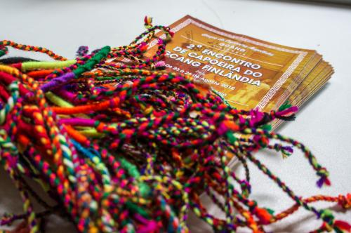 ..quem nunca jogou capoeira de angola não sabe o que é vadiar..
Вот и я решила избавиться от очередного «я никогда не..» в своей жизни и отправилась в Финляндию, постигать азы анголы и знакомиться с мастерами Cabello, Marrom и Angolinha. Представляю вам небольшой фотоотчет и пачку собственных впечатлений. Осторожно, много мимими!
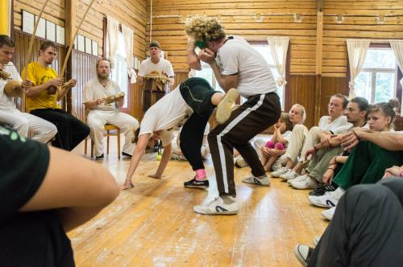
Все началось с маленькой, по-домашнему уютной роды в четверг. Играла с человеком в кепке, знакомство с которым началось ещё в дверях: „Привет, я Кабеллу, это ты девочка из России, которая приехала в 8 утра?“ Игралось панично, честное слово.
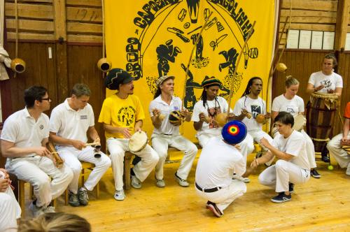
Участников было немного, не больше сорока человек, зато преподавательский состав впечатлял: три местре, три контраместре (Carcará и Forró из «Marrom e Alunos», Toicinho из «Nova Geração de Angola») и пачка профессоров.
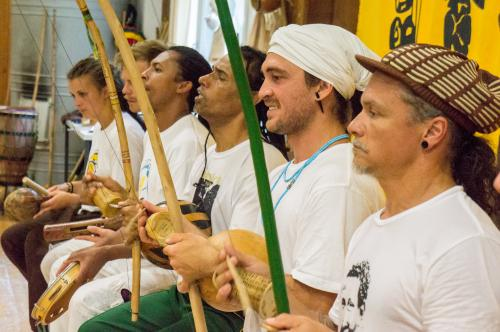
Маррум провел первую тренировку в пятницу. Вместо капоэйры он включил самбу, чтобы мы забыли о том, что жинга это „раз-два-три“ и начали двигаться свободнее.
Преподаватель он очень Ответственный, что лично меня сразу подкупило. Маррум давал материал спокойно, последовательно, обращая внимание на все детали и не упуская из вида ни одного ученика. Все-все-все происходило под абсолютным контролем мастера.
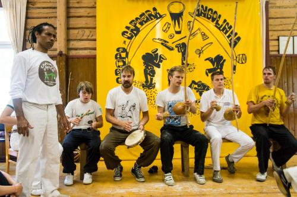
Marrom:
Вы все очень молодые, очень сильные. Техника? Oh, wonderful! Но дисциплина? Porra. Я посыпал пол тальком. Когда вы играете на тальке, вы более осторожны. Из осторожности следует техничность и дисциплинированность. Нет, игра не меняется, только ваши движения станут более мягкими.
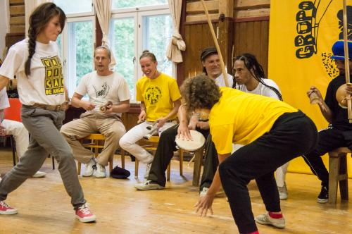
Вне занятий Маррум много времени проводил наедине с собой, всегда был очень серьезен и почти не участвовал в спонтанных сборах. Но от диалога не отказывался, отвечал на вопросы с энтузиазмом и в любое время суток с удовольствием делился своими знаниями.
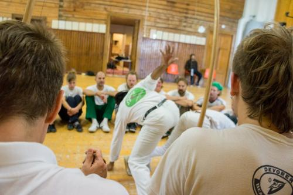
Marrom:
Capoeira angola é assim, meu irmão: это игра наверху, игра на среднем уровне и игра внизу. Сейчас уже много анголейру, которые играют вверху, более современно. Делают разные сложные движения, вроде чизора джи френчи, чизора джи костас. Когда меня спрашивают, что я думаю об этом, я отвечаю: я никогда не учился этому у местре.
Чизора, которой я учился, делается вот так. Можно ли делать другие? Я не знаю. Но я знаю, что у капоэйра ангола есть множество своих ресурсов, множество движений, которые вы можете использовать.
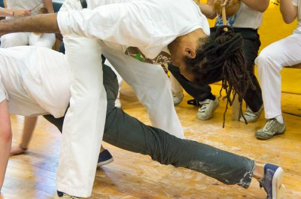
Уважение к мастеру, преемственность традиций — неотъемлемая часть капоэйра ангола. Когда Кабеллу спросил, кто был мастером моего мастера, я, к своему стыду, не смогла ничего ответить. А здесь на тренировках имя João Grande звучало постоянно.
С одной стороны преемственность необходима, если ты занимаешься такой традиционнной вещью, как ангола. И об этом, конечно, много говорилось, мол, вы, новое поколение анголейру, должны сохранять и продолжать традиции ваших мастеров. Но с другой стороны, эта преемственность зачастую используется как универсальный ответ на вопросы. «Почему мы делаем это так?» — «Потому что так делал мой мастер, это традиция».
Впрочем, когда я напрямую спросила у мастеров, насколько возможно традиции менять и привела пример с тем же Жоау Гранжи, который чуть видоизменил батерию Паштиньи, я получила, хоть и не сразу, довольно четкий ответ: можно, если ты считаешь что так правильно. Наверное, в этом и состоит задача мастеров анголы — научить использовать эту свободу не в личных целях.
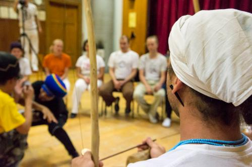
Marrom:
Уважение в капоэйре — мастера к ученику, ученика к мастеру, капоэйриста к капоэйристу — ничем не отличается от уважения за ее пределами, в обычной жизни — в семье, на улице. Это отражение того воспитания, которое человек получил дома.
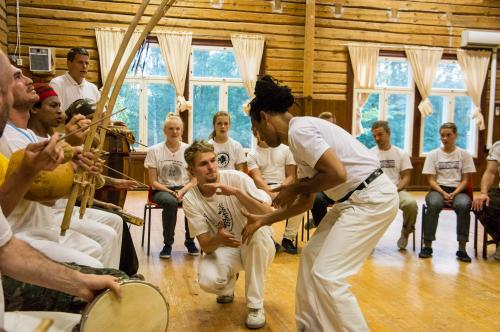
Такая концентрация бразилов на сто квадратов привела ко вполне предсказуемым последствиям — каждый вечер семинара заканчивался безумным перкусионным джемом, самбой, песни которой ни разу не повторялись, и форро. Вечерами улыбался даже Маррум.
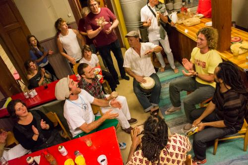
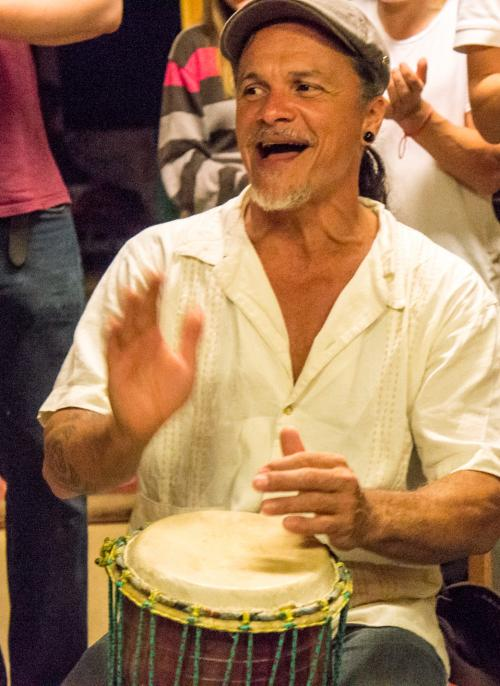
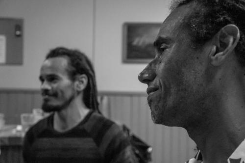
Cabello:
Сегодня многие игонируют такие традиционные движения, как чизора или корта капинь. Знаете сколько комбинаций можно сделать, используя их? Вы сами себя лишаете очень большой части словаря капоэйра ангола. Чизора в анголе это такая же проверка, как шамада. Используя её в игре со старым мастером, вы показываете свое знание основ и уважение к традициям.
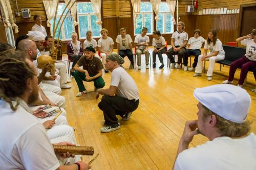
Тренировки Кабеллу были насыщенны этими самыми “традиционными движениями”, что для меня, конечно, было весьма интересно. Но более всего мне запомнились его музыкальные занятия, пожалуй, именно во время них Кабеллу раскрывался как человек с Харизмой, способный без труда организовать все и всех вокруг себя.
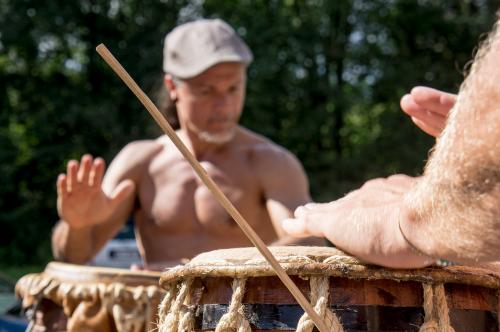
Кабеллу в России уже был, на семинаре Реал, и в марте снова собирается в Санкт-Петербург, к КДО. Его нынешняя всемирная популярность для меня теперь легко объяснима — он не только великолепный капоэйрист, с собственным стилем и собственным восприятием, но и по-настоящему талантливый, внимательный педагог, а также очень открытый, душевный человек.
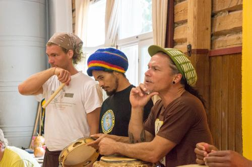
Cabello:
Capoeira entra saindo e sai entrando…
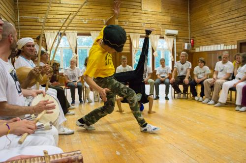
Cabello:
Мне бы хотелось, чтобы вы нашли себя в капоэйре. Энергия внутри каждого из нас различна. Если вам не подходит то, чем вы занимаетесь сейчас, продолжайте искать. Капоэйра тоже бывает разной, ищите группу, ищите мастера.
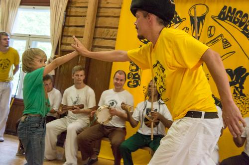
А капоэйра она вся в голове, говорил Кабеллу. Вы можете потерять деньги, работу, но никто не сможет отобрать у вас то, что вы знаете и умеете.
Tá tudo aqui e daqui ninguém me tira…
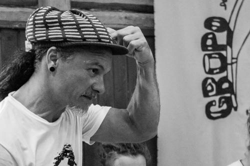
Контра-местре Forró провел мастер-класс по Coco-de-roda. “Характер стойкий нордический” это точно не про финских анголейру, в зале была жара!
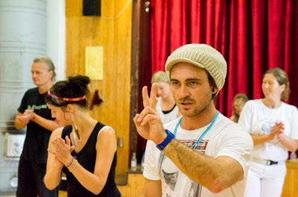
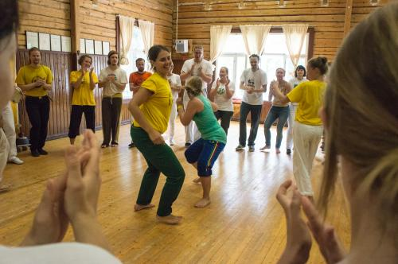
В последний день провели раздачу новых званий, в группе Анголиньи значительно прибавилось трейнелов, а Cipó стал контра-местре. Теперь в Финляндии их два, знакомьтесь, Carcará и Cipó.
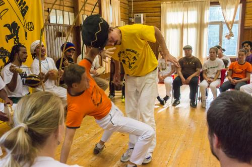
В завершение официальной части мастера обратили внимание на то, что групп режионала и контемпорании в Финляндии практически нет, зато ангола представлена едва ли не десятком групп.
“Многие не понимают анголу, но мы-то с вами знаем, что к чему”.
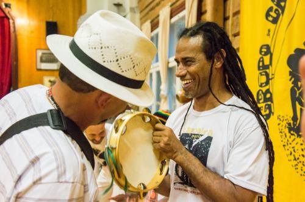
Ну а потом я, попрощавшись со всеми, получив приглашение в академии Маррума и Кабеллу в Бразилии, пообещав финнам обязательно приехать ещё раз и не одной, купив пачку беримбау, отправилась домой, размышлять о том, что же на самом деле к чему.
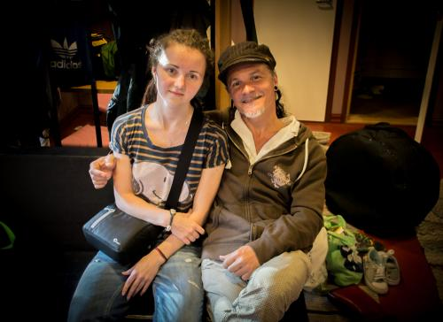